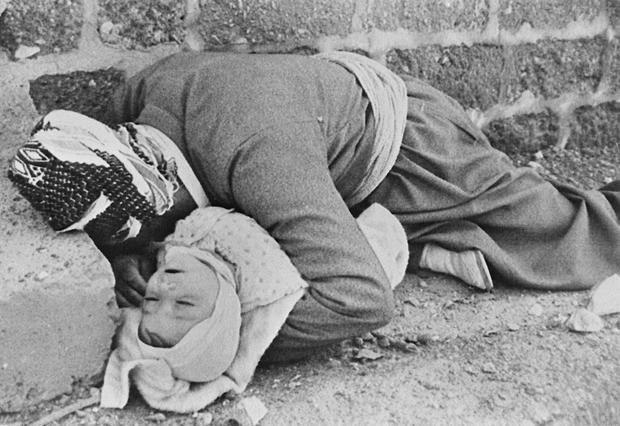
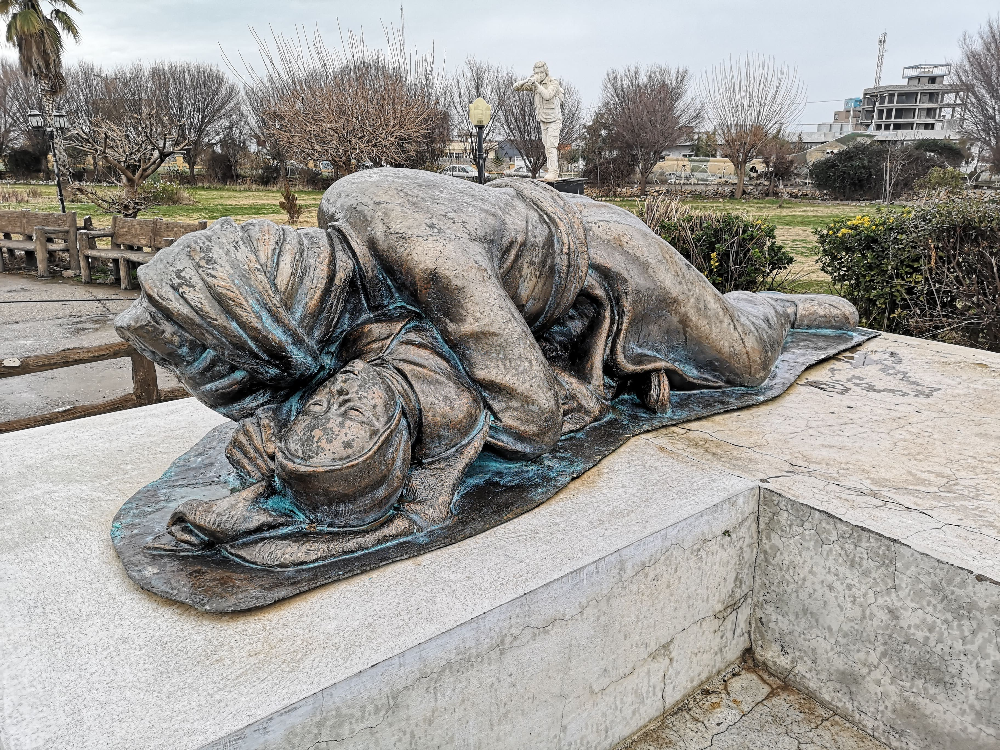

The Halabja chemical attack (Kurdish: Kêmyabarana Helebce کمیابارانی ھەڵەبجە), also known as the Halabja Massacre or Bloody Friday, was a massacre against the Kurdish people that took place on 16 March 1988, during the closing days of the Iran–Iraq War in the Kurdish city of Halabja in Iraq. The attack was part of the Al-Anfal Campaign in Kurdistan, as well as part of the Iraqi attempt to repel the Iranian Operation Zafar 7. It took place 48 hours after the fall of the town to the Iranian Army. A United Nations (UN) medical investigation concluded that mustard gas was used in the attack, along with unidentified nerve agents. The attack killed between 3,200 and 5,000 people and injured 7,000 to 10,000 more, most of them civilians. Preliminary results from surveys of the affected region showed an increased rate of cancer incidence and birth defects in the years after the attack. The incident, which has been officially defined by Supreme Iraqi Criminal Tribunal as a genocidal massacre against the Kurdish people in Iraq, was the largest chemical weapons attack directed against a civilian-populated area in history.
 